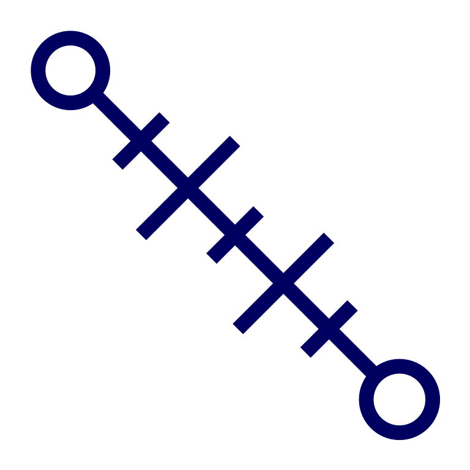
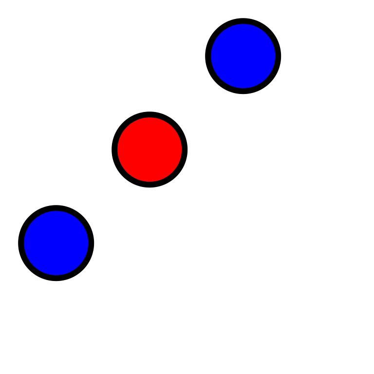
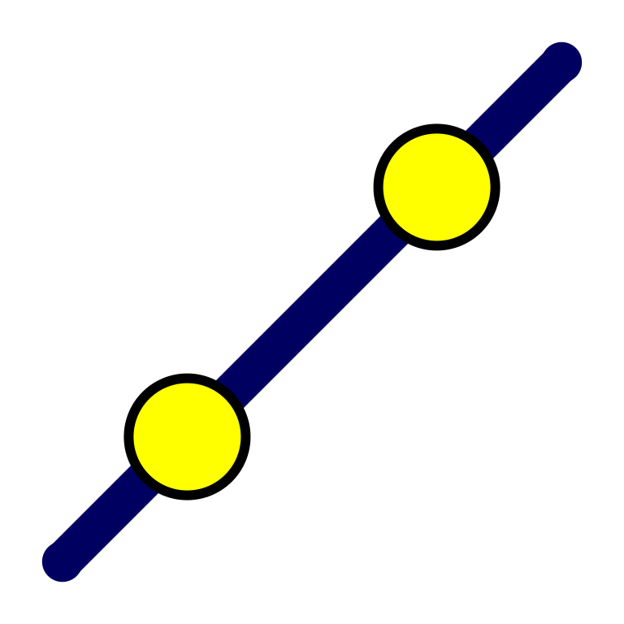
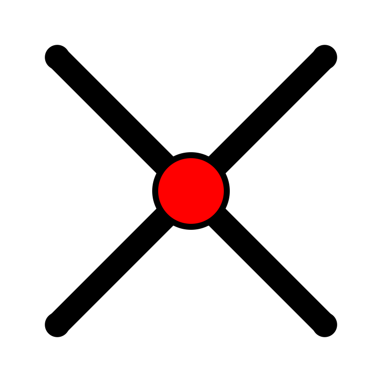
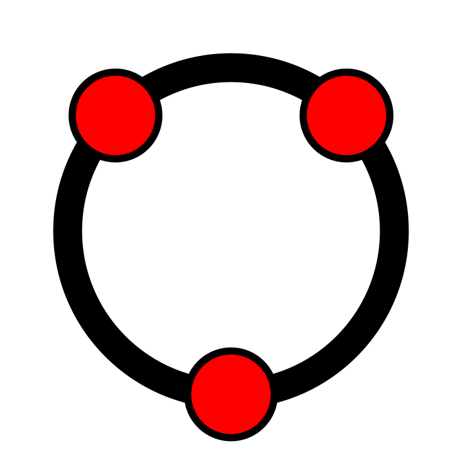
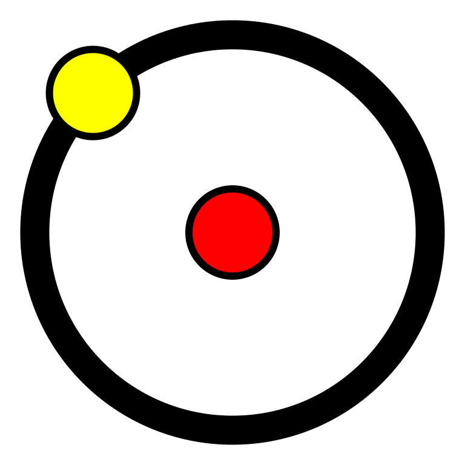

"Geometria" is a tool for interactive Geometry. Its purpose is to ease Geometric constructions, to save them in a programmable configurable way and reveal and challenge a new programmer in order to explore further. The philoshophy followed behind any geometric construction is an infinite loop where at each step we introduce some points and then we select them in order to apply the desirable geometric tool. "Geometria" was designed with simplicity and minimalism in mind.
|
Press "New File" to start a new geometric construction. |
|
|
Select the file extesion you would like to save your construction. Then press save in order to download your construction as a file of the selected type. |
|
|
Use "Undo", "Redo" to go back and forth to the history of the construction. |
| Use "Delete" in order to delete from board the next selected element. | |
| Use "Axis" to toggle appearance of X, Y axes. | |
| Use "Angle Marker" in order to mark angles of the constructions. | |
|  | Use "Measure Tool" in order to meaure the distance between any two points. |
| Use "Merge Tool" in order to merge two points or to make a point glider to another curve. | |
| Use "Text" in order to introduce on board the text of the input. A TeX formula can be used, as well Unicode text. | |
|
|
Press on owl to display general information about Geometria. |
| Select Point tool and click on board to create new points. | |
 |
"Selection tool". Use this tool to select the necessary number of points. |
|  | Select two points and find the midpoint |
| Select two points and draw the segment between them. | |
|  | Select two points and draw the line between them. |
| Draw the semiline from the first selected point towards the second selected. | |
|  | Select any two curves and find their intersection points. |
| Select three points to draw the sector defined by them. | |
| Select three points to draw the bisector of the angle defined by them. | |
| Select a point and a line segment in order to draw the parallel from the point to this line segment. | |
| Select a point and a line segment in order to draw the perpendicular from this point to the line segment. | |
|  | Select three points in order to draw the circle passing from those points. |
|  | Select two points in order to draw a circle with center the first and radius their distance. |
| Select two points in order to draw the semicircle having as diameter the selected points. | |
| Select four points to draw the bezier curve from the first to the fourth having control points the second and the third. | |
| Select three points to draw the ellipse passing through them. | |
| Select two points to draw a rectangle with these points as one side and arbitrary width. | |
| Select three points in order to draw the inscribed circle. | |
| Select any number of points back to the first selected in order to draw the polygon defined by these points. |
| Determines if current drawing fill with color is going to be active. | |
| Displays the RGB value of the currently selected fill color. | |
| Displayed the currently selected fill color and an input number. The input number determines the opacity of the currently selected fill color, in the range [0-100]. A value of 0 is interpreted transparent and is equivalent to no fill. | |
| Determines if current drawing stroke with color is going to be active. | |
| Displays the RGB value of the currently selected stroke color. | |
| Displayed the currently selected stroke color and an input number. The input number determines the opacity of the currently selected stroke color, in the range [0-100]. A value of 0 is interpreted transparent and is equivalent to no stroke. | |
| Displayed an input number, to determine the current drawing line width of the stroke. The range is also [0-100], default is 2. | |
| Enter an arbitrary mathematical function and press "f(x)" icon in order to plot the particular function between the given bounds. |
| Object ID | The ID attributed to the object by the program. It is not editable. |
| Object Name | The Name - Label of the Geometric Element. A $ sign may introduce a TeX formula. |
| Object Type | The Type attributed to the object by the program. As ID is not editable. |
| Object Position | The coordinates of the object when this is a point or text. Someone may edit them for exact placement. |
| Object Size | An integer related with the magnitude of the object and is interpreted according with the type of the object. |
| Visible | Checked if selected object is visible on board. |
| Show Label | Checked if selected object has a label that should be shown. |
| Fill Color - Opacity | Fill Color value and opacity percentage of the line used to draw the selected object. |
| Stroke Color - Opacity | Stroke Color value and opacity percentage of of the line used to draw the selected object. |
| Stroke Size | Stroke size of the line used to draw the selected object. |